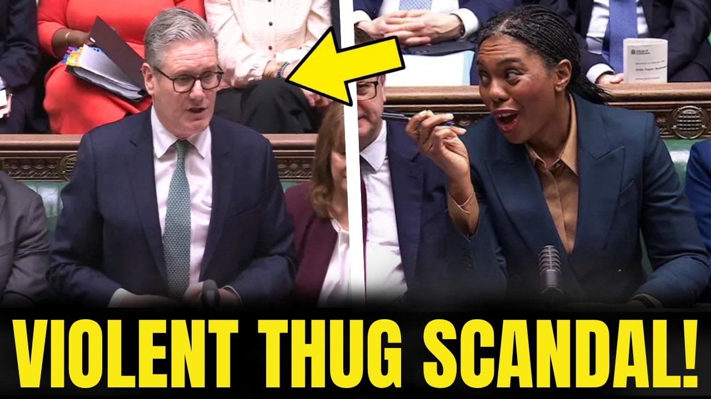

Watch NowMay 14, 2026 / 44K+ views
Starmer absolutely decimated in the Commons over violent Labour councillor scandal.
The channel's breakout briefing format is built for fast-moving political stories: bold framing, parliamentary footage, and Danny's direct read on what the exchange really means.
Open the full briefing